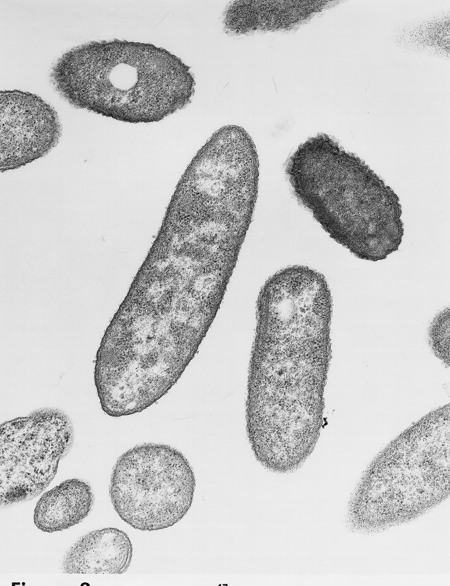

The purpose of the Mitochondria is to make ATP. ATP stands for Adenosine Triphosphate. We use ATP as an energy carrying molecule. ATP provides energy for chemical reactions.

| This is a scanning electron microscope (SEM) view of mitochondria. The SEM only shows the outside structures of objects. Notice that mitochondria come in many shapes and sizes. However, they are almost to small to see with a light microscope. |

| This is a transmission electron microscope (TEM) view of a mitochondria. You can see the inner membrane which is highly folded. The infolded areas of the inner membrane are called crista. |
 Return to the cell
Return to the cell